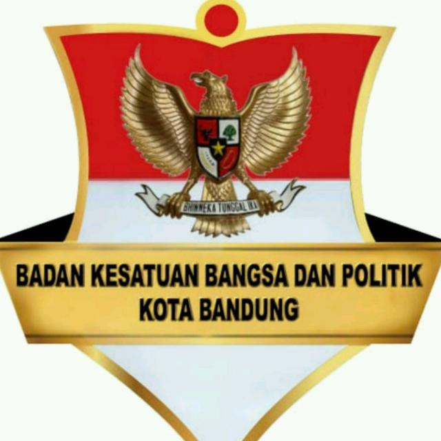

Organizations
-

Badan Kepegawaian dan Pengembangan Sumber Daya Manusia
Badan Kepegawaian dan Pengembangan Sumber Daya Manusia mempunyai tugas pokok...
14 Datasets View Badan Kepegawaian dan Pengembangan Sumber Daya Manusia -

Badan Kesatuan Bangsa dan Politik
Badan Kesatuan Bangsa dan Politik mempunyai tugas pokok yaitu...
9 Datasets View Badan Kesatuan Bangsa dan Politik -
Badan Keuangan dan Aset Daerah
Badan Keuangan dan Aset Daerah mempunyai tugas pokok melaksanakan sebagian...
45 Datasets View Badan Keuangan dan Aset Daerah -

Badan Meteorologi, Klimatologi dan Geofisika
Badan Meteorologi, Klimatologi, dan Geofisika (disingkat BMKG), sebelumnya...
5 Datasets View Badan Meteorologi, Klimatologi dan Geofisika -
Badan Pendapatan Daerah
Badan Pendapatan Daerah mempunyai tugas pokok yaitu menyelenggarakan fungsi...
8 Datasets View Badan Pendapatan Daerah -
Badan Perencanaan Pembangunan, Penelitian dan Pengembangan
Badan Perencanaan Pembangunan, Penelitian dan Pembangunan mempunyai tugas...
52 Datasets View Badan Perencanaan Pembangunan, Penelitian dan Pengembangan -
Badan Pusat Statistik
Badan Pusat Statistik adalah Lembaga Pemerintah Nonkementerian yang...
26 Datasets View Badan Pusat Statistik -

Balai Besar Wilayah Sungai Citarum (BBWS Citarum)
Kegiatan BBWS dalam pendayaan sumber daya air meliputi : Konservasi sumber...
4 Datasets View Balai Besar Wilayah Sungai Citarum (BBWS Citarum) -
Dinas Arsip dan Perpustakaan
Dinas Arsip dan Perpustakaan mempunyai tugas pokok yaitu menyelenggarakan...
9 Datasets View Dinas Arsip dan Perpustakaan -
Dinas Cipta Kaya, Bina Konstruksi dan Tata Ruang
Dinas Cipta Kaya, Bina Konstruksi dan Tata Ruang mempunyai tugas pokok yaitu...
30 Datasets View Dinas Cipta Kaya, Bina Konstruksi dan Tata Ruang -
Dinas Ketahanan Pangan dan Pertanian
Dinas Ketahanan Pangan dan Pertanian mempunyai tugas pokok yaitu...
29 Datasets View Dinas Ketahanan Pangan dan Pertanian -
Dinas Kebudayaan dan Pariwisata
Dinas Kebudayaan dan Pariwisata mempunyai tugas pokok melaksanakan sebagian...
31 Datasets View Dinas Kebudayaan dan Pariwisata -
Dinas Kependudukan dan Pencatatan Sipil
Dinas Kependudukan dan Pencatatan Sipil mempunyai tugas pokok melaksanakan...
41 Datasets View Dinas Kependudukan dan Pencatatan Sipil -
Dinas Kesehatan
Dinas Kesehatan mempunyai tugas pokok melaksanakan sebagian urusan Pemerintah...
92 Datasets View Dinas Kesehatan -
Dinas Ketenagakerjaan
Dinas Ketenagakerjaan mempunyai tugas pokok yaitu menyelenggarakan urusan...
13 Datasets View Dinas Ketenagakerjaan -
Dinas Komunikasi dan Informatika
Dinas Komunikasi dan Informatika mempunyai tugas pokok melaksanakan sebagian...
36 Datasets View Dinas Komunikasi dan Informatika -
Dinas Koperasi dan Usaha Kecil dan Menengah
Dinas Koperasi dan Usaha Kecil dan Menengah merupakan unsur pelaksana Urusan...
66 Datasets View Dinas Koperasi dan Usaha Kecil dan Menengah -
Dinas Lingkungan Hidup
Dinas Lingkungan Hidup mempunyai tugas pokok yaitu menyelenggarakan urusan...
11 Datasets View Dinas Lingkungan Hidup -
Dinas Pemberdayaan Perempuan dan Perlindungan Anak
Dinas Pemberdayaan Perempuan dan Perlindungan Anak mempunyai tugas pokok...
5 Datasets View Dinas Pemberdayaan Perempuan dan Perlindungan Anak -
Dinas Pemuda dan Olahraga
Dinas Pemuda dan Olah Raga mempunyai tugas pokok melaksanakan sebagian urusan...
12 Datasets View Dinas Pemuda dan Olahraga -
Dinas Penanaman Modal dan Pelayanan Terpadu Satu Pintu
Dinas Penanaman Modal dan Pelayanan Terpadu Satu Pintu mempunyai tugas pokok...
30 Datasets View Dinas Penanaman Modal dan Pelayanan Terpadu Satu Pintu